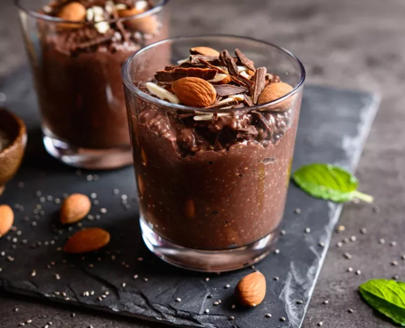

Класичний тофу перебити в блендері з розтопленим шоколадом. За бажанням, можна додати кероб або какао. Чудово смакує з ягодами.
- тофу(250 г.)
- шоколад (100 г.)
- ягоди
- горіхи
Класичний тофу перебити в блендері з розтопленим шоколадом. За бажанням, можна додати кероб або какао. Чудово смакує з ягодами.